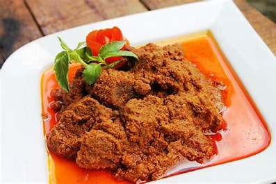
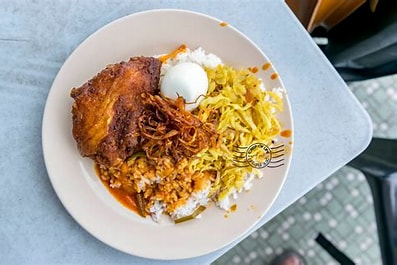
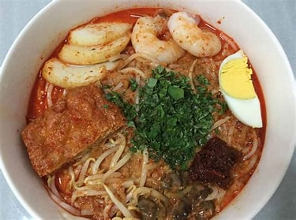
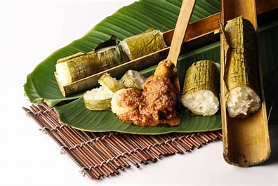

Indian Muslim dish is the complete package. Yellow noodles. Beef or chicken. Shrimp. Soy sauce, veggies and eggs.
A bit of chili tossed in for an irresistible jolt.
Sadly, you can try to replicate this one at home, but it’s just not going to taste the way it did when you chowed down at that gritty Malaysian hawker stall.
2. Nasi lemak
Nasi lemak is often referred to as Malaysia’s unofficial national dish.
It’s rice cooked in coconut milk.
Depending on where you are in Malaysia, it comes with a variety of accompaniments such as hard-boiled egg, peanuts, vegetables, lamb/chicken/or beef curry, seafood and sambal (chili-based sauce).
Nasi lemak is traditionally eaten for breakfast but these days people are ordering it any time of day.
3. Rendang (beef, chicken or lamb)

Though sometimes erroneously called a curry, Malaysian food aficionados point out that this chunky cauldron of coconut milk and spices is nothing of the sort..
The difference is in how it’s prepared: slowly simmered (to let the meat absorb the spices) until the rosy liquid completely evaporates.
A favorite, especially during festive seasons, rendang is found across Malaysia.
4. Nasi Kandar

Nasi kandar is essentially rice served with your choice of toppings, which commonly include curry, fish, egg and okra.
Everything is laid out buffet style, though you can also order a la carte.
Found all over Malaysia, nasi kandar eateries are extremely popular, most open 24 hours and run by ethnic Indian Muslims.
5. Laksa

A staple of Malaysian cuisine, laksa eateries have been migrating abroad, making appearances in Bangkok, Shanghai and further afield.
There are multiple variations. For anyone who enjoys a taste of the volcanic kind, this spicy noodle soup can get you there in its curry form.
Penang’s asam laksa, in which tamarind features heavily (“asam” is Malay for tamarind) to create a spicy-sour fish broth.
6. Lemang

Eaten with a meat or vegetable dish, lemang is glutinous rice mixed with coconut milk, which is cooked in bamboo.
The time-consuming process to make lemang starts by lining hollowed-out shoots with banana leaves.
The bamboo is left over a fire to slowly cook the rice in a process known as tapai.
The result is sticky, wet rice.
7. Lor bak
A Nyonya specialty of Penang, lor bak is braised pork that has been marinated in five-spice powder before being wrapped in soft bean curd skin and deep-fried.
Lor bak is served with two dipping sauces, a spicy red chili sauce and a gravy thickened with cornstarch and a beaten egg called lor.